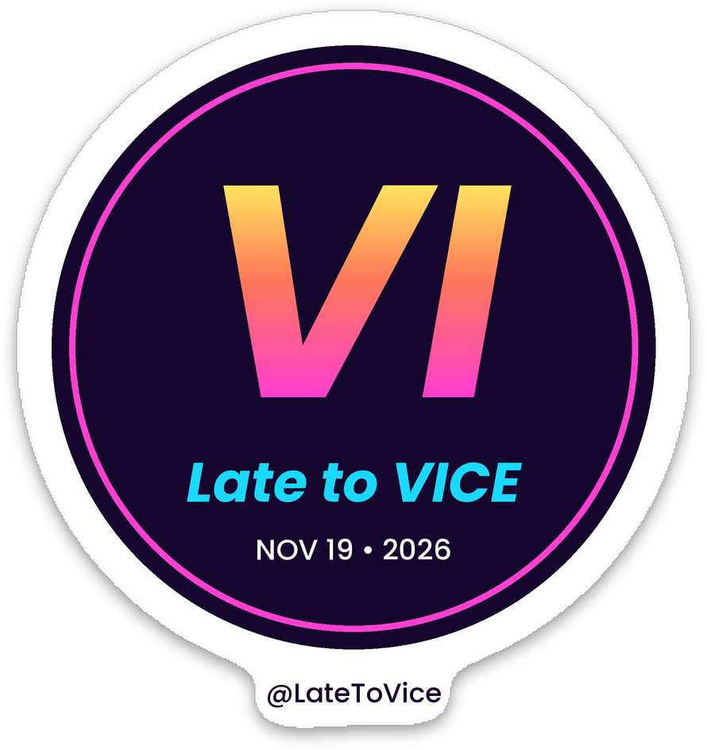

<title>Late to Vice Road Ahead</title>
<meta name="claude:viewport-fit-sides" content="cover">
<link rel="preconnect" href="https://fonts.googleapis.com">
<link rel="stylesheet" href="https://fonts.googleapis.com/css2?family=Poppins:ital,wght@0,400;0,600;0,800;1,800&family=JetBrains+Mono:wght@500&display=swap">
<style>
/* Layout: sticker-led hero, sticky chapter nav, then stacked guide sections of cards. Single dark look by choice, matched to the Late to Vice stickers. */
:root {
  --night: #150a2e;      /* sticker ground */
  --panel: #21123f;
  --line: #3a2763;
  --pink: #ff3fbf;
  --sun: #ffb347;
  --cyan: #1fd6ff;
  --text: #f6f1ff;
  --muted: #b7a9d6;
  --warn: #ffd166;
  --display: "Poppins", "Segoe UI", system-ui, sans-serif;
  --body: "Poppins", "Segoe UI", system-ui, sans-serif;
  --mono: "JetBrains Mono", ui-monospace, Menlo, monospace;
  color-scheme: dark;
}
* { box-sizing: border-box; }
body {
  background: var(--night); color: var(--text); font-family: var(--body);
  font-size: 15px; line-height: 1.6;
}
body::before { content: ""; position: fixed; inset: 0 0 auto; height: env(safe-area-inset-top, 0px); z-index: 10; background: var(--night); }
.wrap { max-width: 980px; margin: 0 auto; padding-left: max(16px, env(safe-area-inset-left, 0px)); padding-right: max(16px, env(safe-area-inset-right, 0px)); }
h1, h2, h3 { font-family: var(--display); line-height: 1.15; text-wrap: balance; margin: 0; }
h2 { font-size: clamp(1.7rem, 4vw, 2.4rem); font-weight: 800; font-style: italic; }
h3 { font-size: 1.05rem; font-weight: 600; }
p { margin: 0; }
a { color: var(--cyan); }
a:focus-visible, button:focus-visible { outline: 2px solid var(--cyan); outline-offset: 3px; }

/* Hero */
.hero { padding-block: 2.5rem 2rem; }
.hero .wrap { display: grid; grid-template-columns: 180px 1fr; gap: 2rem; align-items: center; }
.hero img { width: 180px; max-width: 100%; height: auto; transform: rotate(-6deg); filter: drop-shadow(0 10px 24px rgba(255,63,191,.25)); }
.eyebrow { font-family: var(--mono); font-size: .75rem; letter-spacing: .12em; text-transform: uppercase; color: var(--cyan); }
.hero h1 { font-size: clamp(2.2rem, 6vw, 3.6rem); font-weight: 800; font-style: italic; margin-block: .35rem .75rem;
  background: linear-gradient(180deg, var(--sun), var(--pink)); -webkit-background-clip: text; background-clip: text; color: transparent; }
.hero p.lede { color: var(--muted); max-width: 58ch; }
.notice { margin-top: 1rem; display: inline-block; font-size: .8rem; color: var(--warn); border: 1px solid #5a4a1c; background: #2a2210; padding: .45rem .7rem; border-radius: 8px; }

/* Nav */
nav.chap { position: sticky; top: env(safe-area-inset-top, 0px); z-index: 5; background: var(--night); border-bottom: 1px solid var(--line); }
nav.chap .wrap { display: flex; gap: .5rem; overflow-x: auto; padding-block: .6rem; }
nav.chap a { flex: none; text-decoration: none; color: var(--text); font-weight: 600; font-size: .85rem; padding: .4rem .9rem; border-radius: 999px; border: 1px solid var(--line); }
nav.chap a:hover { border-color: var(--pink); color: var(--pink); }

section.guide { padding-block: 3rem 1rem; scroll-margin-top: 60px; }
.sec-head { display: flex; align-items: end; justify-content: space-between; gap: 1rem; flex-wrap: wrap; margin-bottom: 1.5rem; }
.sec-head .tag { font-family: var(--mono); font-size: .75rem; color: var(--muted); }
.sec-head h2 span { color: var(--cyan); }

.grid { display: grid; grid-template-columns: repeat(auto-fit, minmax(260px, 1fr)); gap: 1rem; }
.card { background: var(--panel); border: 1px solid var(--line); border-radius: 14px; padding: 1.1rem; display: flex; flex-direction: column; gap: .6rem; min-width: 0; }
.card p, .card li { color: var(--muted); font-size: .9rem; }
.card ul { margin: 0; padding-left: 1.1rem; display: grid; gap: .3rem; }
.card strong { color: var(--text); font-weight: 600; }

/* Mini image tiles: original icons + slot for the creator's own capture */
.shot { aspect-ratio: 16 / 9; max-width: 100%; border-radius: 10px; border: 1.5px dashed var(--line);
  background: radial-gradient(120% 120% at 80% 0%, #3b1450 0%, var(--night) 60%);
  display: grid; place-items: center; position: relative; overflow: hidden; }
.shot svg { width: 46%; height: auto; }
.shot .cap { position: absolute; left: 8px; bottom: 6px; right: 8px; font-family: var(--mono); font-size: .62rem; color: var(--muted); letter-spacing: .04em; }

.pill { align-self: flex-start; font-family: var(--mono); font-size: .68rem; padding: .15rem .55rem; border-radius: 999px; letter-spacing: .05em; text-transform: uppercase; }
.pill.ok { color: #0d2b1c; background: #6be3a4; }
.pill.check { color: #2a2210; background: var(--warn); }
.pill.miss { color: #fff; background: #d6336c; }

/* Settings table */
.table-wrap { overflow-x: auto; border: 1px solid var(--line); border-radius: 14px; }
table { width: 100%; border-collapse: collapse; font-size: .9rem; min-width: 520px; }
th, td { text-align: left; padding: .7rem .9rem; border-bottom: 1px solid var(--line); vertical-align: top; }
th { font-family: var(--mono); font-size: .7rem; letter-spacing: .1em; text-transform: uppercase; color: var(--muted); background: var(--panel); }
td.val { font-family: var(--mono); color: var(--sun); white-space: nowrap; font-variant-numeric: tabular-nums; }
tr:last-child td { border-bottom: 0; }

/* Mission flow */
ol.flow { list-style: none; margin: 0; padding: 0; display: grid; gap: .5rem; counter-reset: m; }
ol.flow li { counter-increment: m; display: grid; grid-template-columns: 2.2rem 1fr; gap: .75rem; align-items: start; background: var(--panel); border: 1px solid var(--line); border-radius: 12px; padding: .75rem .9rem; }
ol.flow li::before { content: counter(m, decimal-leading-zero); font-family: var(--mono); color: var(--pink); font-size: .85rem; padding-top: .1rem; }
ol.flow li p { color: var(--muted); font-size: .88rem; }
ol.flow li.lock { border-color: #d6336c; }

.callout { margin-top: 1.25rem; border-left: 3px solid var(--pink); background: #2a1040; padding: 1rem 1.1rem; border-radius: 0 12px 12px 0; }
.callout h3 { color: var(--pink); margin-bottom: .35rem; }
.callout p, .callout li { color: var(--text); font-size: .9rem; }
.callout ul { margin: .3rem 0 0; padding-left: 1.1rem; }

.subhead { margin-block: 2rem 1rem; font-size: 1.2rem; font-weight: 800; font-style: italic; color: var(--sun); }

footer { padding-block: 3rem; color: var(--muted); font-size: .8rem; border-top: 1px solid var(--line); margin-top: 3rem; }
footer .wrap { display: grid; grid-template-columns: 1fr 140px; gap: 1.5rem; align-items: start; }
footer ul { padding-left: 1rem; margin: .5rem 0 0; display: grid; gap: .2rem; }
footer img { width: 140px; max-width: 100%; height: auto; }

@media (max-width: 620px) {
  .hero .wrap { grid-template-columns: 1fr; gap: 1rem; }
  .hero img { width: 120px; }
  footer .wrap { grid-template-columns: 1fr; }
  footer img { width: 110px; }
}
@media (prefers-reduced-motion: no-preference) { html { scroll-behavior: smooth; } }
</style><style>
.cover-logo { width: 220px; max-width: 100%; height: auto; }
.hero .stack { display: flex; flex-direction: column; gap: .75rem; align-items: center; }
code.pad { font-family: var(--mono); color: var(--sun); font-size: .85rem; }
.spoiler-note { color: var(--muted); font-size: .85rem; margin-top: .75rem; }
.yt li { color: var(--muted); }
</style>
<header class="hero">
  <div class="wrap">
    <div class="stack">
      
      
    </div>
    <div>
      <div class="eyebrow">Field guide, part 2 · Chapters 3–5 · no spoilers</div>
      <h1>The road ahead.<br>No spoilers.</h1>
      <p class="lede">What to do before each later chapter so you don't lose money, missions or collectibles, plus the truth about cheats and the best tips from launch-week YouTube guides. No plot, no twists: only things you'd want to know before you get there.</p>
      <p class="notice">Unofficial fan guide. Built from community guides in launch week, checked 26 Nov 2026. Guides disagree on mission counts and some details, so items marked "check" need confirming in your game.</p>
    </div>
  </div>
</header>

<nav class="chap" aria-label="Guide sections">
  <div class="wrap">
    <a href="#rules">Golden rules</a>
    <a href="#tips">Best YouTube tips</a>
    <a href="#chapter-3">Chapter 3</a>
    <a href="#chapter-4">Chapter 4</a>
    <a href="#chapter-5">Chapter 5</a>
    <a href="#cheats">Cheats</a>
    <a href="#sources">Sources</a>
  </div>
</nav>

<main>
<section class="guide" id="rules">
  <div class="wrap">
    <div class="sec-head"><h2>Golden rules <span>for every chapter</span></h2><span class="tag">Most guides list 5 chapters</span></div>
    <div class="grid">
      <div class="card"><span class="pill miss">No mission replay</span><h3>Save before every story decision</h3><p>Keep a second manual save slot. If a choice or a bug goes wrong, an older save is the only way back.</p></div>
      <div class="card"><span class="pill check">Missables</span><h3>Side jobs first, story second</h3><p>Optional missions drop off the map as the story moves on. When a new side job appears, do it before the next main mission.</p></div>
      <div class="card"><span class="pill ok">Collectibles</span><h3>Grab magazines before you leave a place</h3><p>Magazines and books in story locations are lost once you leave those places for good. One guide counts 9 across Jason's house, the Starlet Motel and Bayside Apartments.</p></div>
      <div class="card"><span class="pill ok">Phone</span><h3>Answer your calls</h3><p>Some missions only unlock after a call or text, and at least one call in Chapter 4 expires when the chapter ends.</p></div>
    </div>
  </div>
</section>

<section class="guide" id="tips">
  <div class="wrap">
    <div class="sec-head"><h2>Best tips <span>from YouTube</span></h2><span class="tag">Repeated across the most-watched launch-week guides</span></div>
    <p style="color:var(--muted);max-width:65ch;margin-bottom:1.25rem">The tips that kept coming up across the big "tips you need to know" videos and the written guides that back them up. Each one is in our own words, with the videos linked at the bottom so the creators get the credit.</p>
    <div class="grid">
      <div class="card"><h3>Leave the engine running</h3><p>Double-tap <code class="pad">Triangle</code> / <code class="pad">Y</code> when getting out. The car stays on for a fast getaway. The game never teaches this.</p></div>
      <div class="card"><h3>Read the map colors</h3><p>On the pause map, <strong>dark blue</strong> buildings can be entered. Pale blue ones are generally shut.</p></div>
      <div class="card"><h3>Bank your cash</h3><p>Cash in your wallet is lost if you die or get busted. Bank it as soon as you can.</p></div>
      <div class="card"><h3>Stow your guns</h3><p>Put weapons in the car trunk or an ammo locker. Reloading a save erases weapons that weren't saved, and owned guns you drop go back to your trunk.</p></div>
      <div class="card"><h3>Find a shooting range</h3><p>Ranges build your <strong>Focus</strong> bar, which powers slow-motion aiming. One guide says the game never points you to them.</p></div>
      <div class="card"><h3>Buy a suppressor early</h3><p>Ammu-Nation in Key Lento sells cheap suppressors for most guns right after the tutorial.</p></div>
      <div class="card"><h3>Grab a garage when they open</h3><p>Garages unlock once you leave Key Lento. Free car storage, your weapon loadout, and a place to drop off goods to sell.</p></div>
      <div class="card"><h3>Hit the heavy bag</h3><p>Punching the heavy bag at Jason's house builds stamina early.</p></div>
      <div class="card"><span class="pill check">Check</span><h3>Duck to hide</h3><p>One list says ducking down in a parked car hides you from police. Not confirmed elsewhere yet.</p></div>
    </div>
  </div>
</section>

<section class="guide" id="chapter-3">
  <div class="wrap">
    <div class="sec-head"><h2>Chapter 3: <span>before you get there</span></h2><span class="tag">Biggest chapter by mission count</span></div>
    <div class="grid">
      <div class="card"><span class="pill miss">Timed</span><h3>Race the moment the hourglass appears</h3><p>A side race in this chapter shows an hourglass marker on the map. Do it as soon as it appears or it can disappear.</p></div>
      <div class="card"><span class="pill miss">Missable</span><h3>Finish side questlines all the way</h3><p>Some guides flag the final job of a Chapter 3 side questline as missable. If someone keeps giving you work, see it through before pushing the story.</p></div>
      <div class="card"><span class="pill ok">Collectibles</span><h3>Last chance for Chapter 1–3 magazines</h3><p>One guide says to collect each chapter's magazines before that chapter ends. Sweep your story locations before you move on.</p></div>
    </div>
  </div>
</section>

<section class="guide" id="chapter-4">
  <div class="wrap">
    <div class="sec-head"><h2>Chapter 4: <span>before you get there</span></h2><span class="tag">Big decisions, no replays</span></div>
    <div class="grid">
      <div class="card"><span class="pill miss">Missable</span><h3>Finish Felipe's job before "Power Play"</h3><p>Felipe's side job ("Bad Driver!") closes for good once you start the main mission Power Play. Do it first if you want his reward.</p></div>
      <div class="card"><span class="pill miss">Expires</span><h3>Pick up Lucia's call</h3><p>A call from Lucia in this chapter is time-sensitive and expires when the chapter ends.</p></div>
      <div class="card"><span class="pill miss">Save first</span><h3>Back up before the late decisions</h3><p>The chapter ends with a choice that has more than one outcome and can't be replayed. Make a separate save before the last few missions.</p></div>
      <div class="card"><span class="pill ok">Payday</span><h3>Your Chapter 1 choice pays off</h3><p>Guides say sparing Arnold back in Chapter 1 gives you an extra $10k here.</p></div>
    </div>
  </div>
</section>

<section class="guide" id="chapter-5">
  <div class="wrap">
    <div class="sec-head"><h2>Chapter 5: <span>before you get there</span></h2><span class="tag">Short final chapter</span></div>
    <div class="grid">
      <div class="card"><h3>Clear your side content first</h3><p>One guide lists just 7 missions in the final chapter. Treat starting it like Tourist Trap: finish what's open, then go.</p></div>
      <div class="card"><h3>Keep a pre-finale save</h3><p>After the credits, cheats unlock (next section) and turn off saving while active. A clean save from before the finale keeps your options open.</p></div>
    </div>
    <p class="spoiler-note">No plot details here on purpose. Guides for this chapter are thin so far, so expect updates.</p>
  </div>
</section>

<section class="guide" id="cheats">
  <div class="wrap">
    <div class="sec-head"><h2>Cheats: <span>the catch</span></h2><span class="tag">Progress › Cheats</span></div>
    <div class="callout" style="margin-top:0">
      <h3>You can't cheat your way through the story</h3>
      <ul>
        <li>The cheats list only unlocks <strong>after you finish the main story</strong>. You'll find it under Progress › Cheats.</li>
        <li>Each cheat has its own unlock. A few come with beating the story, others come from challenges, like losing a 3-star wanted level 25 times or spending $2,500 on alcohol.</li>
        <li>Using a cheat turns off <strong>saving</strong> and trophies/achievements for that session. Guides disagree on whether reloading brings trophies back, so keep a separate save.</li>
        <li>Guides report 61 cheats in total. Only some codes are known so far.</li>
      </ul>
    </div>
    <div class="grid" style="margin-top:1rem">
      <div class="card"><h3>How to enter a code</h3><p>Hold <code class="pad">L1</code> / <code class="pad">LB</code>, press <code class="pad">R1</code> / <code class="pad">RB</code>, then enter the D-pad sequence.</p></div>
      <div class="card"><span class="pill check">Check codes</span><h3>Unlocked by finishing the story</h3><p>$250,000 cash, unlimited Focus, Attack Force and Cycle Weather. Sources list different inputs, so use the in-game Cheats list as the final word.</p></div>
    </div>
  </div>
</section>
</main>

<footer id="sources">
  <div class="wrap">
    <div>
      <div class="eyebrow">Videos scanned · credit to the creators</div>
      <ul class="yt">
        <li><a href="https://www.youtube.com/watch?v=X54pK6784-c">GTA 6 - 100 HUGE Tips You NEED to Know</a></li>
        <li><a href="https://www.youtube.com/watch?v=od4yuK67yhk">GTA 6 - 63 HUGE Tips You NEED to Know (Free Weapons &amp; Fast Money)</a></li>
        <li><a href="https://www.youtube.com/watch?v=-yffRHHfs-I">GTA 6: 40 Tips You NEED to Know!</a></li>
        <li><a href="https://www.youtube.com/watch?v=zzJrBYsV39Y">GTA 6 - 23 HUGE Tips You NEED to Know on Day 1</a></li>
        <li><a href="https://www.youtube.com/watch?v=1DRmB2-Ks40">ESSENTIAL Tips I Wish I Knew Sooner - GTA 6</a></li>
        <li><a href="https://www.youtube.com/watch?v=dJDf76QVv70">GTA 6 - 13 Things I Wish I Knew</a></li>
        <li><a href="https://www.youtube.com/watch?v=kfL02Hi9yZQ">Pro Tips To Get MORE Out Of Grand Theft Auto 6</a></li>
      </ul>
      <div class="eyebrow" style="margin-top:1.25rem">Written sources · checked 26 Nov 2026</div>
      <ul>
        <li><a href="https://kotaku.com/here-are-some-super-useful-control-shortcuts-gta-6-doesnt-tell-you-about-2000759100">Kotaku: control shortcuts</a></li>
        <li><a href="https://games.gg/grand-theft-auto-vi/guides/grand-theft-auto-6-guide-20-things-game-doesnt-tell-you/">games.gg: 20 things the game doesn't tell you</a></li>
        <li><a href="https://tech.yahoo.com/gaming/articles/8-gta-6-tips-game-115452979.html">Yahoo: 8 tips after 140 hours</a></li>
        <li><a href="https://dotesports.com/gta/guides/gta-6-tips-spoiler-free-phone-car-money-hack">Dot Esports: spoiler-free tips</a></li>
        <li><a href="https://www.keengamer.com/articles/guides/gta-6-walkthrough-all-chapters-and-story-missions-in-order/">KeenGamer: all chapters</a></li>
        <li><a href="https://readdork.com/gaming/gta-6-walkthrough">Dork: walkthrough, choices and missables</a></li>
        <li><a href="https://game-checklists.com/gta6/guides/missables/">Game Checklists: missables</a></li>
        <li><a href="https://gta6pocket.com/en/missables/">GTA6Pocket: missables</a></li>
        <li><a href="https://www.tweaktown.com/news/114769/gta-6-has-61-cheats-but-youll-have-to-beat-the-story-before-using-any-of-them/index.html">TweakTown: cheats locked until story ends</a></li>
        <li><a href="https://www.pushsquare.com/guides/gta-6-cheats-and-unlock-conditions">Push Square: cheats and unlock conditions</a></li>
        <li><a href="https://gtamap.io/gta-6-cheats/">gtamap.io: cheat inputs</a></li>
      </ul>
      <p style="margin-top:1rem">Unofficial guide, not affiliated with Rockstar Games or Take-Two. Part 1 (settings, Chapters 1–2) is the Late to Vice Field Guide.</p>
    </div>
    
  </div>
</footer>
